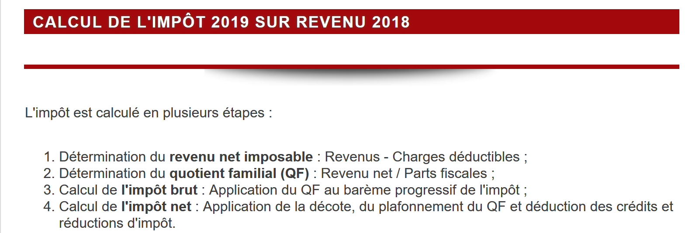
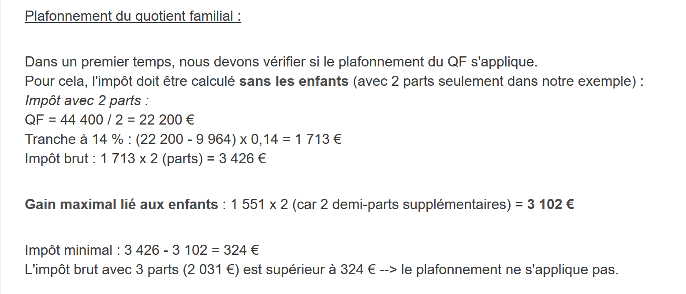

4. Application Exercise – Versions 1 and 2
4.1. The problem

The table above is used to calculate the tax in the simplified case of a taxpayer who has only their salary to report. As indicated in note (1), the tax calculated this way is the tax before three adjustments:
- the family quotient cap, which applies to high incomes;
- the tax credit and tax reduction that apply to low-income earners.
Thus, the tax calculation involves the following steps [http://impotsurlerevenu.org/comprendre-le-calcul-de-l-impot/1217-calcul-de-l-impot-2019.php]:

We propose to write a program to calculate a taxpayer’s tax in the simplified case of a taxpayer who has only a single salary to report. The rules used are those for the 2019 tax on 2018 income. They will serve as a guiding principle throughout this document: the algorithm will remain the same across different versions of the application; only its architecture will change.
4.1.1. Calculation of Gross Tax
The gross tax can be calculated as follows.
First, calculate the taxpayer’s number of shares:
- each parent contributes 1 share;
- the first two children each contribute 1/2 share;
- subsequent children each contribute one share.
The number of shares is therefore:
- nbParts = 1 + nbChildren * 0.5 + (nbChildren - 2) * 0.5 if the employee is unmarried;
- nbParts = 2 + nbChildren * 0.5 + (nbChildren - 2) * 0.5 if they are married;
where nbEnfants is the number of children, and the term (number of children - 2) * 0.5 applies only when there are three or more children. Next:
- the taxable income R is calculated as R = 0.9 * S, where S is the annual salary;
- the family quotient QF = R / nbParts is calculated;
- calculate the gross tax I based on the following data (2019):
field1 (threshold for QF) | field2 (coeffR) | field3 (coeffN) |
9964 | 0 | 0 |
27,519 | 0.14 | 1,394.96 |
73,779 | 0.3 | 5,798 |
156,244 | 0.41 | 13,913.69 |
0 | 0.45 | 20,163.45 |
Each row has 3 fields: field1, field2, field3. To calculate tax I, find the first row where QF <= field1 and use the values from that row. For example, for a married employee with two children and an annual salary S of 50,000 euros:
- taxable income: R = 0.9 * S = 45,000;
- number of tax brackets: nbParts = 2 + 2 * 0.5 = 3;
- family quotient: QF = 45,000 / 3 = 15,000.
The first row where QF <= field1 is as follows:
Tax I is then equal to 0.14*R – 1,394.96*nbParts=[0,14*45000-1394,96*3]=2,115. The tax is rounded down to the nearest euro.
If the condition QF <= field1 is satisfied starting from the first line, then the tax is zero.
If QF is such that the condition QF <= field1 is never satisfied, then the coefficients from the last line are used. In this case:
which yields the gross tax I = 0.45*R – 20,163.45*nbParts.
4.1.2. Family Quotient Cap

To determine whether the family quotient cap QF applies, we recalculate the gross tax without including the children. Again, for the married employee with two children and an annual salary S of 50,000 euros:
- taxable income: R = 0.9 * S = 45,000;
- number of tax brackets: nbParts = 2 (children are no longer counted);
- family quotient: QF = 45,000 / 2 = 22,500.
The first line where QF <= field1 is as follows:
Tax I is then equal to 0.14*R – 1,394.96*nbParts=[0,14*45000-1394,96*2]=3,510.
- Maximum child-related income: 1,551 * 2 = 3,102 euros;
- minimum tax: 3,510 – 3,102 = 408 euros.
The gross tax with 3 tax brackets, already calculated at 2,115 euros, is higher than the minimum tax of 408 euros, so the family cap does not apply here.
In general, the gross tax is greater than (tax1, tax2), where:
- [impôt1]: is the gross tax calculated with children;
- [impôt2]: is the gross tax calculated without children and reduced by the maximum deduction (here, 1,551 euros per half-share) related to children.
4.1.3. Calculation of the tax reduction

Again, for the married employee with two children and an annual salary S of 50,000 euros:
The gross tax (2,115) from the previous step is less than 2,627 euros for a married couple (1,595 euros for a single person): therefore, the tax reduction applies. It is calculated as follows:
- discount = threshold (couple=1,970 / single=1,196) - 0.75 * gross tax;
- tax reduction = 1,970 – 0.75 × 2,115 = 383.75, rounded to 384 euros;
- new gross tax = 2,115 – 384 = 1,731 euros.
4.1.4. Calculation of the Tax Credit

Below a certain threshold, a 20% reduction is applied to the gross tax resulting from the previous calculations. In 2019, the thresholds are as follows:
- single: 21,037 euros;
- couple: 42,074 euros (the figure 37,968 used in the example above appears to be incorrect).
This threshold is increased by the value: 3,797 * (number of half-shares contributed by the children).
Again, for the married employee with two children and an annual salary S of 50,000 euros:
- his taxable income (45,000 euros) is below the threshold (42,074 + 2 × 3,797) = 49,668 euros;
- he is therefore entitled to a 20% reduction in his tax: 1,731 * 0.2 = 346.2 euros, rounded to 347 euros;
- the taxpayer’s gross tax becomes: 1,731 – 347 = 1,384 euros.
4.1.5. Calculation of Net Tax
Our calculation ends here: the net tax due will be 1,384 euros. In reality, the taxpayer may be eligible for other deductions, particularly for donations to public-interest or general-interest organizations.
4.1.6. High-Income Earners
Our previous example applies to the majority of employees. However, the tax calculation differs for high-income earners.
4.1.6.1. Cap on the 10% reduction on annual income
In most cases, taxable income is calculated using the formula: R = 0.9 × S, where S is the annual salary. This is known as the 10% reduction. This reduction is capped. In 2019:
- it cannot exceed 12,502 euros;
- it cannot be less than 437 euros.
Consider the case of an unmarried employee with no children and an annual salary of 200,000 euros:
- the 10% reduction is 200,000 euros > 12,502 euros. It is therefore capped at 12,502 euros.
4.1.6.2. Family Quotient Cap
Let’s consider a case where the family quotient cap described in the “Family Quotient Cap” section above applies: a couple with three children and an annual income of 100,000 euros. Let’s go through the calculation steps again:
- the 10% deduction is 10,000 euros < 12,502 euros. The taxable income R is therefore 100,000 – 10,000 = 90,000 euros;
- the couple has nbParts = 2 + 0.5 × 2 + 1 = 4 shares;
- their family quotient is therefore QF = R / nbParts = 90,000 / 4 = 22,500 euros;
- their gross tax I1 with children is I1 = 0.14 × 90,000 − 1,394.96 × 4 = 7,020 euros;
- his gross tax I2 without children:
- QF = 90,000 / 2 = 45,000 euros;
- I2 = 0.3 × 90,000 − 5,798 × 2 = 15,404 euros;
- The family quotient cap rule states that the benefit derived from children cannot exceed (1,551 × 4 half-shares) = 6,204 euros. However, in this case, it is I2-I1 = 15,404 – 7,020 = 8,384 euros, which is greater than 6,204 euros;
- The gross tax is therefore recalculated as I3 = I2-6204 = 15,404 - 6,204 = 9,200 euros.
This couple will receive neither a tax credit nor a reduction, and their final tax will be 9,200 euros.
4.1.7. Official Figures
Tax calculation is complex. Throughout this document, examples will be used to illustrate the process. The official results are those from the tax authority’s 2019 simulator [https://www3.impots.gouv.fr/simulateur/calcul_impot/2019/simplifie/index.htm]:
Taxpayer | Official Results | Results from the document’s algorithm |
Couple with 2 children and an annual income of 55,555 euros | Tax = 2,815 euros Tax rate = 14% | Tax = 2,814 euros Tax rate = 14% |
Couple with 2 children and an annual income of 50,000 euros | Tax = 1,385 euros Tax credit = 384 euros Reduction = 346 euros Tax rate = 14% | Tax = 1,384 euros Discount = 384 euros Tax credit = 347 euros Tax rate = 14% |
Couple with 3 children and an annual income of 50,000 euros | Tax = 0 euros Tax credit = 720 euros Tax credit = 0 euros Tax rate = 14% | Tax = 0 euros Discount = 720 euros Deduction = 0 euros Tax rate = 14% |
Single with 2 children and an annual income of 100,000 euros | Tax = 19,884 euros Tax credit = 0 euros Tax credit = 0 euros Tax rate = 41% | Tax = 19,884 euros Surcharge = 4,480 euros Discount = 0 euros Deduction = 0 euros Tax rate = 41% |
Single with 3 children and an annual income of 100,000 euros | Tax = 16,782 euros Tax credit = 0 euros Tax credit = 0 euros Tax rate = 41% | Tax = 16,782 euros Surcharge = 7,176 euros Discount = 0 euros Deduction = 0 euros Tax rate = 41% |
Couple with 3 children and an annual income of 100,000 euros | Tax = 9,200 euros Tax credit = 0 euros Tax credit = 0 euros Tax rate = 30% | Tax = 9,200 euros Surcharge = 2,180 euros Discount = 0 euros Reduction = 0 euros Tax rate = 30% |
Couple with 5 children and an annual income of 100,000 euros | Tax = 4,230 euros Tax credit = 0 euros Tax credit = 0 euros Tax rate = 14% | Tax = 4,230 euros Discount = 0 euros Deduction = 0 euros Tax rate = 14% |
Single, no children, with an annual income of 100,000 euros | Tax = 22,986 euros Tax credit = 0 euros Tax credit = 0 euros Tax rate = 41% | Tax = 22,986 euros Surcharge = 0 euros Discount = 0 euros Deduction = 0 euros Tax rate = 41% |
Couple with 2 children and an annual income of 30,000 euros | Tax = 0 euros Tax credit = 0 euros Tax credit = 0 euros Tax rate = 0% | Tax = 0 euros Discount = 0 euros Deduction = 0 euros Tax rate = 0% |
Single, no children, with an annual income of 200,000 euros | Tax = 64,211 euros Tax credit = 0 euros Tax credit = 0 euros Tax rate = 45% | Tax = 64,210 euros Surcharge = 7,498 euros Discount = 0 euros Deduction = 0 euros Tax rate = 45% |
Couple with 3 children and an annual income of 200,000 euros | Tax = 42,843 euros Tax credit = 0 euros Tax credit = 0 euros Tax rate = 41% | Tax = 42,842 euros Surcharge = 17,283 euros Discount = 0 euros Deduction = 0 euros Tax rate = 41% |
In the example above, the “surcharge” refers to the additional amount paid by high-income earners due to two factors:
- the cap on the 10% deduction from annual income;
- the cap on the family quotient.
This indicator could not be verified because the tax authority’s simulator does not provide it.
We can see that the document’s algorithm calculates the correct tax amount every time, though with a margin of error of 1 euro. This margin of error stems from rounding. All monetary amounts are rounded—sometimes up to the next euro, sometimes down to the nearest euro. Since the author is unaware of the official rounding rules, the monetary amounts in the document’s algorithm have been rounded:
- up to the next euro for discounts and reductions;
- down to the nearest euro for surcharges and the final tax.
In the following section, tests will be conducted to verify the validity of the results. These tests will be performed using the examples from the previous table with an accepted margin of error of 1 euro.
4.2. The script directory structure
The first two versions of the application are in the [scripts-console/impots] folder:
For reference, the file [resultats-verifies.txt] contains the results obtained using the official simulator for the taxpayers in the file [taxpayersdata.txt].
4.3. Version 1
4.3.1. The Algorithm
We present an initial program in which:
- the data needed to calculate the tax is hard-coded in the program as arrays and constants;
- taxpayer data (marital status, children, salary) is stored in a first text file, [taxpayersdata.txt];
- the results of the tax calculation (marital status, children, salary, tax, etc.) are stored in a second text file, [resultats.txt].
The data file [taxpayersdata.txt] (married, children, salary) is as follows:
The main program of the script [version-01/main.php] is as follows:
Comments:
- line 4: we enforce strict adherence to the types of parameters and function return values;
- Lines 7–16: Definition of all constants needed to calculate the tax. The keyword [const] defines a global constant that is accessible throughout the script, including within functions. Course PHP 7 used the function [define("PLAFOND_QF_DEMI_PART", 1551)], which does the same thing and still exists. [const] is more readable and allows the editor to check the names of the constants. By convention, constant names are in uppercase;
- line 19: the name of the text file containing taxpayer data (married status, children, salary);
- line 20: the name of the text file containing the tax calculation results;
- lines 21–23: the three data tables defining the different tax brackets used in the tax calculation. These are the three columns of the table in the “Gross Tax Calculation” section;
- lines 26–30: open the taxpayer data file for reading using [r]. The function [is_readable] first checks whether the file exists and can be read: if not, [$data] is set to [false]. This prevents the warning that [fopen] would issue if the file were missing. The function [fopen] also returns the value [false] if the file could not be opened;
- lines 33–37: open the results file for writing using [w];
- lines 40–54: loop to read the lines (spouse, children, salary) from the taxpayer data file;
- line 40: the function [fgets] reads up to 100 characters and stops at the first end-of-line marker encountered. Here, all lines are less than 100 characters long. If an end-of-line character is encountered, it is included in the returned string. When the end of the file is reached, the function [fgets] returns the value [false];
- line 42: the line-end character is removed. The file [taxpayersdata.txt] was created in Windows: its lines end with the two characters \r\n;
- line 44: the components (married, children, salary) of the line are retrieved. These are three character strings;
- lines 45–47: the marital status is converted to lowercase, and the number of children and the salary are converted to integers. These explicit conversions are necessary: in strict mode, the function [calculImpot] would not accept the string "2" for its parameter [int $enfants];
- line 49: the tax is calculated. The result is returned as an associative array. Note that the salary, a [int], is passed to the [float $salaire] parameter of the [calculImpot] function: this is the only conversion allowed in strict mode;
- line 51: The keys [marié, enfants, salaire] are added to the beginning of the array retrieved previously. The + operator applied to two associative arrays returns an array containing the elements of both arrays;
- line 52: the result is stored in the results file as a string JSON, with one line per taxpayer;
- lines 56–57: Once the taxpayer data file has been fully processed, the files are closed;
- line 64: the function that removes the line-end character from a line of the [$ligne] string. The line-end character is the string "\r\n" on Windows systems and "\n" on Unix systems. The result is the input string without its line-end character.
The function [calculImpot] is as follows:
Comments:
- Line 81: The gross tax is calculated including dependents. The result is in the form [["impôt" => $impôt, "surcôte" => $surcôte, "taux" => $coeffR[$i]]], where:
- [impôt]: the gross tax;
- [surcôte]: the amount of the surcharge, if any. This applies when the 10% deduction exceeds the threshold of 12,502 euros;
- [taux]: the taxpayer’s tax rate;
- line 82: the gross tax [$impot1] due;
- lines 84–85: if the taxpayer has at least one child, the tax calculation is redone using the same data but assuming 0 children. This second calculation is necessary to determine whether the tax reduction resulting from having children exceeds a certain threshold;
- line 86: the gross tax [$impot2] due;
- lines 88–94: For the gross tax [$impot2], the children are now factored in: each half-share contributed by the children results in a reduction of [PLAFOND_QF_DEMI_PART] euros. The first two children contribute one half-share each; subsequent children contribute one full share, for a total of two half-shares;
- lines 96–97: case where the taxpayer has no children. In this case, calculating [$impot2] is unnecessary. It is equal to [$impot1];
- lines 100–108: Two gross tax amounts have been calculated: [impot1, impot2]. The tax authority retains the higher of the two. This results in a gross tax amount of [$impot];
- lines 110–111: the gross amount [$impot] may be subject to a reduction;
- lines 113–114: the gross amount [$impot] may be subject to a reduction;
- Lines 116–122: [$impot] is now the net tax payable. The results are returned. The calculations were performed using real numbers ([float]): the functions [floor] (rounding down to the nearest integer) and [ceil] (rounding up to the nearest integer) also return real numbers. We convert the amounts to integers using [(int)] so that they appear without a decimal part. The rate remains a real number.
The function [calculImpot2] is as follows:
Comments:
- Here, the tax is calculated using the so-called progressive tax scale;
- lines 134–142: calculation of the taxpayer’s number of tax brackets;
- line 145: the taxable income is calculated using a function. As we have seen, it is not always 0.9*revenusAnnuels. The 10% deduction is, in fact, capped at 12,502 euros;
- line 147: calculation of any surcharge if the taxable income exceeds 0.9*revenusAnnuels;
- Lines 149–151: Corrects the fact that, due to rounding errors, the result is sometimes [$surcôte=-1];
- line 153: the family quotient;
- lines 155–160: this quotient is used to determine the taxpayer’s tax bracket. We search for the first element of [$limites] that is greater than or equal to the quotient. The quotient was stored in the last element of [$limites] (which was 0): the loop [while] therefore stops at this last element at the latest. Since the array [$limites] was passed by value, this modification affects only the local copy of the function;
- line 164: Once the taxpayer’s tax bracket has been determined, their gross tax can be calculated. The function [floor($x)] returns the integer value immediately less than [$x];
- line 166: the calculated information is returned.
The function [getRevenuImposable] is as follows:
Comments:
- line 174: the standard deduction is 10% of annual salary;
- Lines 176–178: The deduction cannot exceed the maximum deduction [ABATTEMENT_DIXPOURCENT_MAX];
- lines 180–182: the deduction cannot be less than the minimum deduction [ABATTEMENT_DIXPOURCENT_MIN];
- lines 184–186: calculation of taxable income, rounded down to the nearest euro using function [floor].
The function [getDecote] is as follows:
Comments:
- line 195: maximum gross tax amount to qualify for a tax reduction. This amount differs for single taxpayers and couples;
- line 196: whether the taxpayer is eligible for the tax reduction;
- line 200: the tax reduction formula. [$plafondDécôte] is the maximum amount of the tax reduction. This maximum amount is calculated on line 198. Again, it depends on the taxpayer’s status—married or single;
- Lines 202–204: The tax reduction cannot exceed the gross tax due. This is the case, for example, if [$impots] equals 0;
- lines 206–208: to avoid a negative tax credit;
- Line 211: The tax reduction is rounded up to the next euro.
The function [getRéduction] is as follows:
Comments:
- lines 218–222: To be eligible for a tax reduction, the taxable income (line 224) must be less than a threshold calculated here. This threshold increases by [VALEUR_REDUC_DEMI_PART] for each half-share contributed by the children;
- lines 227–230: If the taxpayer meets the conditions, they are entitled to a 20% tax reduction (line 229);
- line 232: the reduction is rounded up to the next euro.
4.3.2. Results
Run the script in a terminal opened in the [version-01] folder:
The [resultats.txt] file (married, children, salary, tax, surcharge, discount, reduction, tax rate) containing the results is as follows:
The calculated taxes (2814, 1384, 0, 19884, 16782, 9200, 4230, 22,986, 0, 64,210, 42,842) are those in the “Results of the Document Algorithm” column of the table of official figures: they match, to within 1 euro, those obtained using the tax authority’s simulator. Note that in the PHP 7 run, the values for [enfants] and [salaire] were strings (“2”, “55555”): version PHP 8 converted them to integers before the calculation, and the file JSON saves them as numbers.
4.3.3. Conclusion
The algorithm for calculating taxes, even in cases considered simple, is complex. We will not revisit it here. Across different versions, its core will remain the same despite a few changes in presentation. We will therefore comment only on those changes.
4.4. Version 2
4.4.1. Changes
In the previous version, the data needed to calculate the tax was hard-coded as constants and arrays. This method should be avoided. In the new version, this data is externalized in the file JSON [taxadmindata.json] located next to the script:
The contents of the file [taxadmindata.json] are as follows:
It contains the three [limites, coeffR, coeffN] tables and the constants from version 1, with the same names.
The new version, [version-02/main.php], is as follows (the functions not shown have the same code as in version 1, except for the parameter [$taxAdminData]):
1 2 3 4 5 6 7 8 9 10 11 12 13 14 15 16 17 18 19 20 21 22 23 24 25 26 27 28 29 30 31 32 33 34 35 36 37 38 39 40 41 42 43 44 45 46 47 48 49 50 51 52 53 54 55 56 57 58 59 60 61 62 63 64 65 66 67 68 69 70 71 72 73 74 75 76 77 78 79 80 81 82 83 84 85 86 87 88 89 90 91 92 93 94 95 96 97 98 99 100 101 102 103 104 105 106 107 108 109 110 111 112 113 114 115 116 117 118 119 120 121 122 123 124 125 126 127 128 129 130 131 132 133 134 135 136 137 138 139 140 141 | |
Comments:
- line 9: the name of the JSON file containing tax administration data;
- lines 12–20: an attempt is made to read the contents of the file JSON named [$TAXADMINDATA]. The function [file_get_contents] returns the entire contents of a file as a string, and [false] if the operation fails;
- lines 22–32: if the file was successfully read, the function [json_validate] is used (PHP 8.3) to verify that it contains valid JSON data, then its contents are decoded into the associative array [$taxAdminData];
- lines 35–39: If an error occurred in either of the two previous operations, an error message is written to the console and the program terminates;
- line 67: The difference from version 1 is that here the data (arrays and constants) from the tax authority are stored in the associative array [$taxAdminData], whereas in version 1, they were stored in global arrays and constants. It is the global nature of these constants that distinguishes the two versions:
- In Version 1, the constants were accessible in all functions of [main.php];
- to achieve the same result in version 2, you must pass the associative array [$taxAdminData] as a parameter to all functions that require it: [calculImpot], [calculImpot2], [getRevenuImposable], [getDecote], and [getRéduction];
- Line 91: The function [calculImpot] receives the array [$taxAdminData] as its first parameter. The arrays [limites, coeffR, coeffN] are no longer parameters; they are contained in [$taxAdminData];
- Lines 108–111: Where global constants were previously used, the contents of the array [$taxAdminData], received as a parameter, are now used.
The function [calculImpot2] retrieves the tax brackets from the array [$taxAdminData] in the same way:
- lines 173–175: the three tables of tax brackets are retrieved from the dictionary [$taxAdminData]. The rest of the code remains unchanged.
The other functions are rewritten in the same way. For example, the function [getDecote]:
Execution produces the following output:
and the following [resultats.txt] file:
The results obtained are the same as those obtained in the previous version.
4.4.2. Conclusion
Version 2 is much more flexible than Version 1. If, in another year, the tax calculation algorithm remains the same, only the tax brackets and calculation constants change. All that is needed is to update the file [taxadmindata.json]. With Version 1, you have to go into the code to modify the tax brackets and calculation constants. However, it is likely that the people who need to change the values of the tax brackets and calculation constants do not have access to the algorithm’s code.
Version 2, however, has a flaw: the array [$taxAdminData] must be passed to all functions, and there is no guarantee that it actually contains all the expected keys. A typo in a key in the file JSON would not be detected until the calculation is performed. Version 3 will store this data in an object of class [TaxAdminData], whose properties are declared and typed.